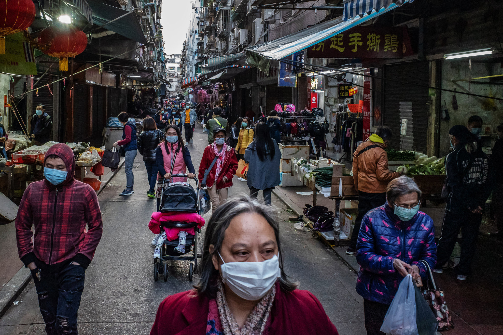
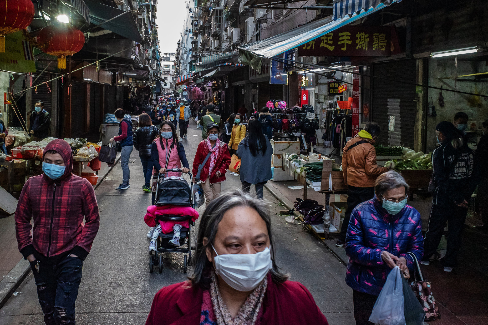

新型冠狀病毒 aka. 武漢肺炎
目前公認的數據統計認為，首宗感染個案發病時間是2019年12月1日。首位前往醫院就診的患者可能出現於12月12日。
12月26日，武漢市呼吸與重症醫學科醫生張繼先最早發現和上報此不明原因肺炎，並懷疑該病屬傳染病。其後該病在武漢市出現大規模疫情。2020年1月23日，武漢市新冠肺炎疫情防控指揮部宣布採取疫區封鎖隔離措施，是近代公共衛生史上第一例將1100萬人口的大城市採取封鎖措施。
3月12日，中華人民共和國國家衛生健康委員會宣布，總體上中國大陸本輪疫情流行高峰已經過去。
3月23日，中華人民共和國國務院總理兼中央應對疫情小組組長李克強宣布，以武漢市為主戰場的中國本土疫情傳播已基本阻斷，抗疫取得初步成功。
全球大流行
1月13日起，疫情陆续蔓延到泰国、日本及韩国等国家，1月21日波及美国西雅图，为亚洲以外的首例确诊个案。
在1月30日中国境外证实有3个国家出现社区传播，世界卫生组织于当日宣布疫情为“国际公共卫生紧急事件”。2月底意大利、韩国与伊朗三国的确诊人数急速增加，29日，世卫组织将疫情的全球风险级别提升为“非常高”。
3月11日，世卫组织宣布此次疫情已构成“全球大流行”，世卫组织并于3月13日表示欧洲已经成为当前大流行瘟疫的中心。
病毒潛伏期
病毒潜伏期一般最长多达14天，有个别病例可达24天。即使没有发烧，没有感染迹象或仅有轻微感染迹象的感染者也可以将病毒传染给他人，症状筛查无法有效检测。这意味着它比中东呼吸综合症（MERS）或严重急性呼吸系统综合症（SARS）的疫情更难控制。
实际上，这次疫情仅花四分之一的时间就造成非典事件十倍的确诊数字。目前尚无针对新型冠状病毒的预防疫苗及治疗方法。世界卫生组织助理总干事布鲁斯·艾尔沃德认为瑞德西韦是目前“唯一可能具有真正的功效”的药物；而对症治疗则是目前的主要治疗方法。
全世界目前有至少3种新型冠状病毒肺炎的预防性疫苗正在处于试验阶段。目前对病症的研究仍存在知识差距，包括病毒来源、病毒发源地、发病机理、病毒的致病性和传播能力等关键因素仍不能确定。
 
